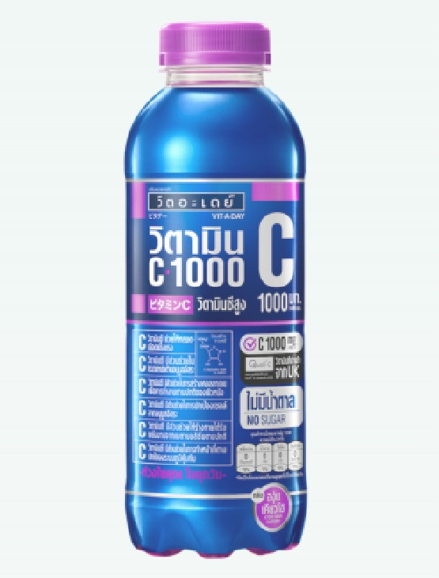
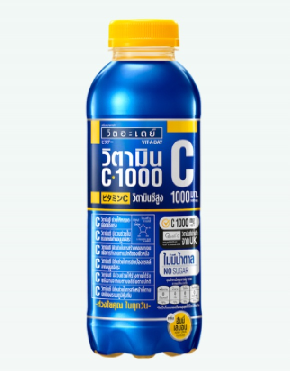
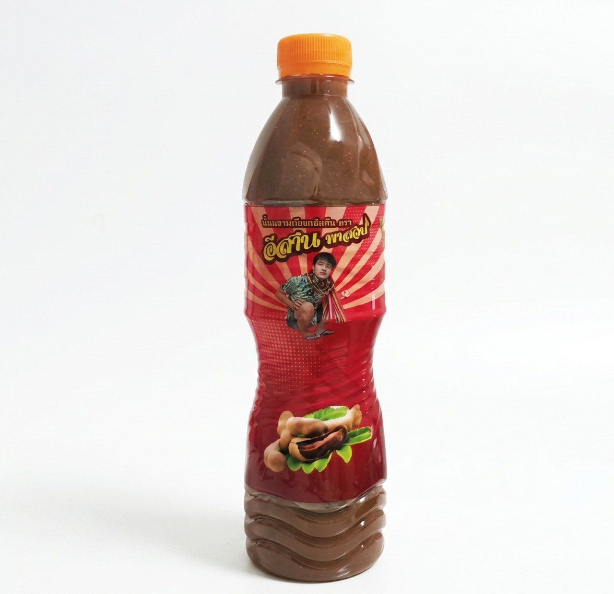
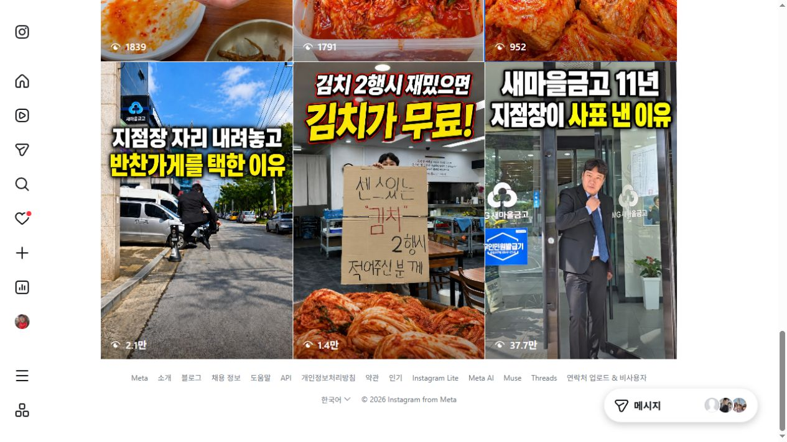

팔 제품과 살 곳부터 맞춥니다.
주력 제품·재고·소매/납품 우선순위, 기존 SNS·판매 링크, 촬영 원본 제공 방식을 확인합니다.
피피엘로직스 · 비타데이 맞춤 운영 제안
비타데이에는 고를 이유를.
소스에는 따라 만들고 싶은 한 끼를.
먹어보고 싶어지는 장면부터 구매처 안내까지.
실제로 식품과 상품을 판매하는 와이비가 운영합니다.


제품을 알게 되는 데서 한 걸음 더.
01 · 비타데이 | 첫 병을 고를 이유
낯선 제품명을 외우게 하기 전에,
내 취향·오늘 먹는 음식과 연결하겠습니다.
첫 번째 콘텐츠 후킹 제안
태국 음식이 놓인 식탁 → 비타데이 라벨 → 얼음에 따르는 장면 → 실제로 마셔본 표현. 제품이 필요한 순간을 먼저 보여줍니다.
두 번째 콘텐츠 후킹 제안
두 제품의 맛·향·단맛을 같은 기준으로 비교하고, 누구에게 어느 제품을 권할지 쉽게 풀어냅니다. 제품마다 별도 구매 버튼을 연결합니다.
표현은 실제 시음과 국내 제품 표시를 확인한 뒤 확정합니다. 체험하지 않은 맛이나 건강 효능을 만들어 말하지 않습니다.
위 장면·문구는 제작 방향 제안입니다. 제품·판매 조건 확인 후 월 제작량 안에서 확정합니다.

02 · 소스 | 익숙한 고민에서 구매 욕구로
완성된 한 접시를 먼저 보여주고,
그 요리에 쓴 제품을 알려줍니다.
“한 번 쓰고 남을까?”라는 걱정에는 같은 소스를 활용하는 다음 요리로 답하겠습니다. 레시피 저장이 제품 선택으로 이어지게 만드는 방식입니다.
팟타이에 필요한 다른 재료도 함께 안내합니다. 배합·활용 메뉴는 실조리 검증 후 확정하며, 이 제품 하나로 요리가 완성된다고 표현하지 않습니다.
03 · 구매 연결 | 관심이 생긴 바로 그때
현재 확인한 비타데이 공식 상세페이지는 ‘문의하기’로 연결됩니다. 소비자에게는 해당 제품을 바로 살 수 있는 판매처가 필요합니다.
영상·캡션에 제품명과 찾는 위치를 일치시킵니다.
여러 상품 사이에서 다시 찾지 않도록 이름을 붙입니다.
같은 맛·용량의 가격, 배송비, 구매 버튼을 확인합니다.
구매처 연결안입니다. 실제 소매 판매 URL은 아직 확인 전입니다. 업체가 운영·승인한 판매 링크를 받아 재고·상품 일치와 모바일 이동을 확인하고 프로필·본문에 연결합니다. 기존 SNS의 링크 정리 범위이며, 새 판매 페이지 제작이나 주문 연동 개발은 포함하지 않습니다.
납품 문의는 따로. 거래처용 안내에는 ‘제품명·예상 수량·납품 지역’을 받아 담당 창구로 연결합니다. 소비자 구매 버튼과 섞지 않습니다.
현재 공식 제품 안내 확인 ↗FIRST MONTH · 우선 비타데이에 집중합니다
주력 제품·재고·소매/납품 우선순위, 기존 SNS·판매 링크, 촬영 원본 제공 방식을 확인합니다.
① 태국 음식과 함께 마시는 장면
② 거봉·허니레몬 선택 가이드
③ 어디서·어떤 구성으로 살 수 있는지
④ 타마린드를 사용한 실제 요리
소스는 업체가 확장을 원하고 조리 원본이 확보될 때 1편을 배정합니다. 비타데이만 원하면 4편 모두 음료에 집중합니다.
카드 4건: 선택 가이드·제품 정보·구매 FAQ·레시피/활용법.
Threads 4건: 제품 선택 질문·짧은 활용 팁.
블로그 2건: 제품 선택/구매 안내·검증한 활용법.
제공되는 조회·저장·링크 클릭과 제품 문의를 구분합니다. 판매처 주문 데이터가 공유되면 구매까지 확인하고 다음 달 주제를 바꿉니다.
제품을 고를 이유와 구매 안내를 고칩니다. 클릭은 있는데 주문이 없다면 가격·배송·상세정보를 업체와 확인합니다. 측정할 수 없는 값은 추정하지 않습니다.
수량은 채널마다 추가되는 수량이 아닌 월 총량입니다. 운영 채널과 재가공 범위는 계약 전 확정합니다. 시작일·납품일은 원본 확보 일정과 함께 협의합니다.
실제로 운영하는 채널
반찬·김치찜 매장의 SNS 브랜딩부터, 일본 현지 콘텐츠·라이브 판매까지.
현재 고객사와 자체 채널에서 직접 만들고 운영하는 사례입니다.
반찬·김치찜 매장 | 조가네맛곳간 · 실제 고객사
사장님 이야기
릴스 누적 조회

원본 릴스 ↗“11년 다닌 새마을금고를 그만뒀습니다.”
가게를 시작한 사람을 콘텐츠로 담았습니다.
2026.10.21 릴스 목록 공개 조회수 확인
일본 현지 콘텐츠·라이브 | 쇼핑왕와이비 · 자체 운영
몬치치 아동복
릴스 누적 조회
 원본 릴스 ↗
원본 릴스 ↗일본 현지에서 상품을 소개하는 콘텐츠와 라이브 판매.
관심을 가진 상품을 자사몰에서 찾도록 연결해 운영합니다.
2026.10.21 릴스 목록 공개 조회수 확인 · 식품과 다른 업종
조회수는 콘텐츠 반응이며 주문·매출 증가를 뜻하지 않습니다. 동일 성과를 보장하지 않습니다.
실제 운영 경험을 이번 제품에 적용합니다
조가네맛곳간에서는 반찬·김치찜 매장의 이야기와 SNS·카카오톡채널·자사몰·라이브를 연결해 수행합니다. 쇼핑왕와이비에서는 일본 현지 상품을 콘텐츠로 소개하고, 자체 몰과 라이브로 판매하는 일을 지금도 하고 있습니다.
비타데이도 ‘무엇을 보여줄지’와 ‘어디서 살지’를 함께 정하겠습니다. 라이브는 제품 반응과 판매 준비를 확인한 뒤 별도 운영안으로 연결할 수 있습니다.
위 사례의 전체 수행 범위가 이번 GROWTH 상품에 모두 포함되는 것은 아닙니다. 라이브 진행·출연·환경 구축은 별도입니다.
와이비가 직접 맡습니다
8평 매장 운영에서 전국 프랜차이즈 확장까지.
외식업의 현장을 경험했고, 지금도 콘텐츠·온라인판매·라이브를 직접 운영합니다.


2024 · GRIP그립 신인판매왕
2025 · GRIP팔아야산다2 우승
브랜드의 온라인판매를 운영합니다. 아래 링크에서 본점과 부산 기장 매장을 확인하실 수 있습니다.
상품을 고르고, 소개하고, 판매처로 연결하는 일을 자신의 채널과 자사몰에서도 계속하고 있습니다.
2024년 그립 신인판매왕 · 2025년 팔아야산다2 우승.
영남대학교 MBA 및 시장 상인 대상 교육 경험도 함께 갖추고 있습니다.
외식 확장 경력: 2012–2023 · 4개 브랜드, 전국 30호점 이상 확장 참여. 장지녕의 담당 영역은 온라인판매 운영입니다.
최소 6개월 · 브랜드의 자체 채널
처음에는 비타데이의 선택 이유와 구매 안내를 갖추고, 이후 실제 반응을 보며 활용법·레시피를 쌓습니다. 잘 먹히는 주제는 시리즈로 키우고, 반응이 약한 주제는 수정합니다.
공급사의 공식 채널에 제품별 설명과 실제 사용 장면이 남습니다. 유행 한 번보다, 고객이 궁금할 때 다시 찾을 수 있는 온라인 자산을 만드는 운영입니다.
이번 요청에 맞춘 운영안
GROWTH 최소 6개월
제공받은 사진·영상 원본을 활용하는 원격 운영
198만원 / 월
VAT 포함 · 공급가 월 180만원
6개월 총액 1,188만원VAT 포함 · 월별 지급 제안, 지급일은 계약 전 확정
촬영과 판매 시스템은 범위를 먼저 정합니다
이번 금액은 업체가 제공하는 제품·시음·조리 원본을 기준으로 합니다. 어떤 장면이 필요한지 촬영 가이드를 드립니다. 와이비의 직접 조리·촬영·출연이 필요하면 촬영 편수와 장소·준비비를 정해 별도 옵션 견적을 드립니다.
자사몰 구축·리뉴얼·상품 등록·주문/배송/환불 CS, 라이브 환경 구축·진행·출연, 현장/출장 촬영, 광고 집행비는 별도입니다. 제품 가격·판매 조건·납기·매출 성과를 임의로 약속하지 않습니다.
우선 제품과 실제 판매 URL, 운영할 SNS 채널, 정기 원본 제공 방식, 제작 규격·수정 범위, 검토 일정·계약 시작일·월별 지급일을 맞춥니다. 수량은 위 월 총량을 유지합니다.
상품의 맛·성분·레시피·표시 문구는 업체 확인 후 사용합니다. 계정·자료 접근은 업무에 필요한 범위로 받고, 기존 제품 페이지를 임의로 수정하거나 신규 판매몰을 만들지 않습니다.
시작은, 제품 한 개와 링크 한 개로
제품명과 현재 판매 링크를 숨고 채팅에 남겨주세요.
그 제품의 첫 콘텐츠 방향과 구매 연결에서 보완할 점을 먼저 말씀드리겠습니다.
복사 후, 이 제안서를 받은 숨고 채팅에 붙여 넣어주세요.